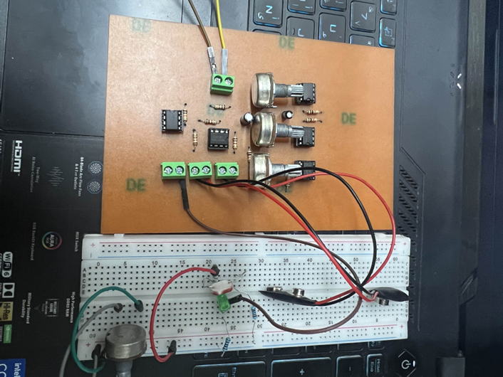
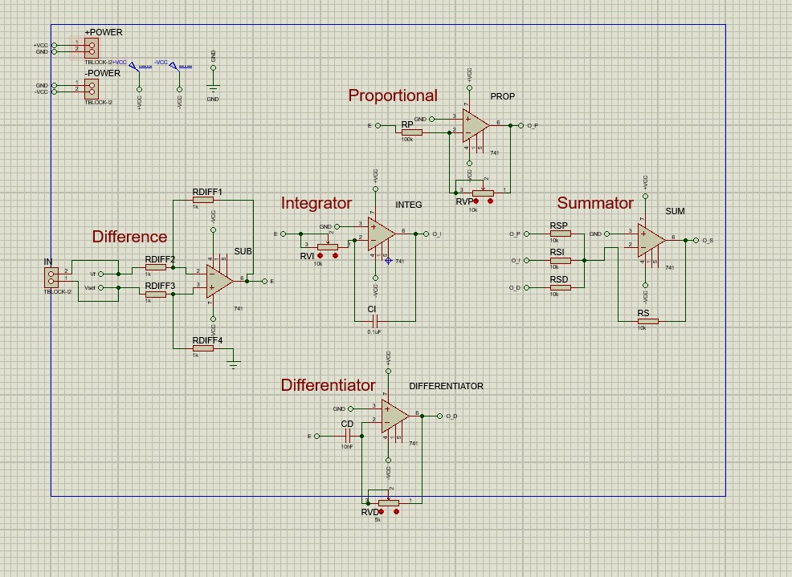
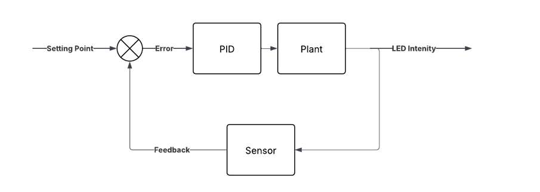
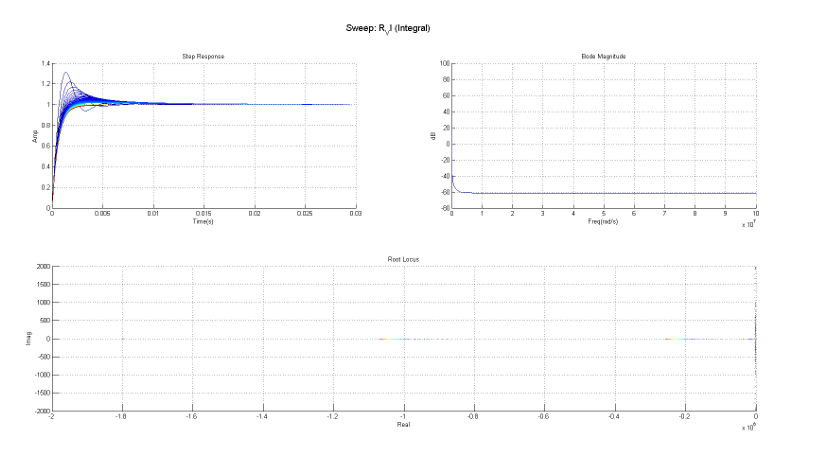
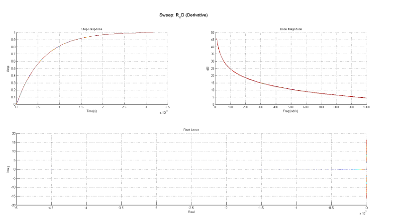
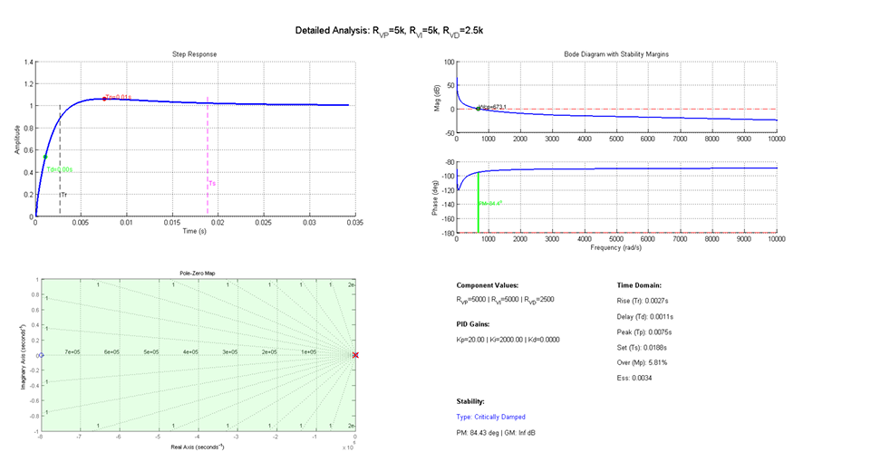
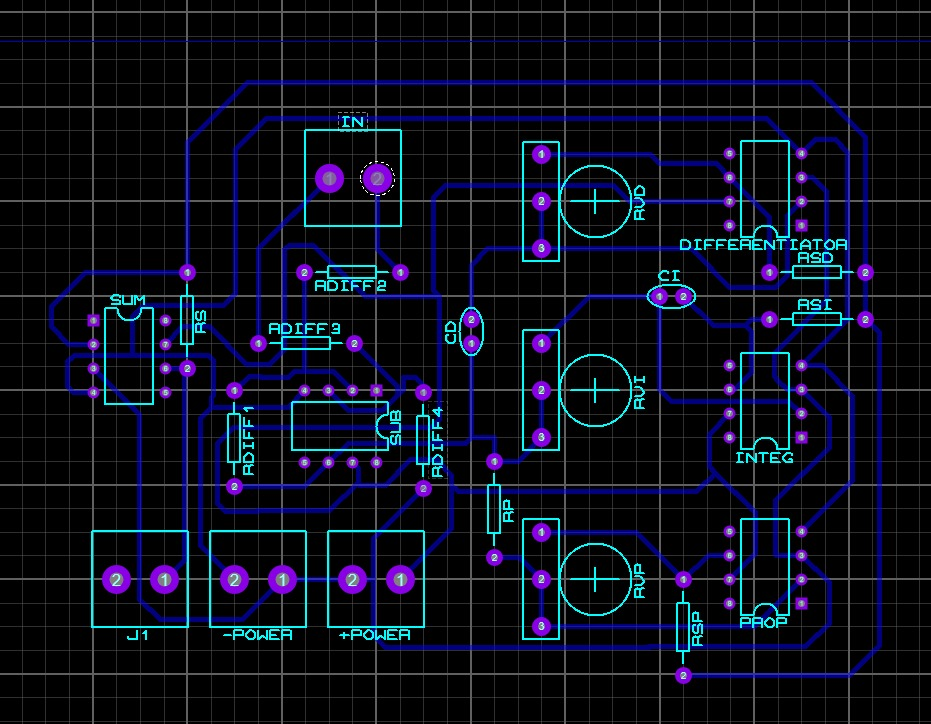
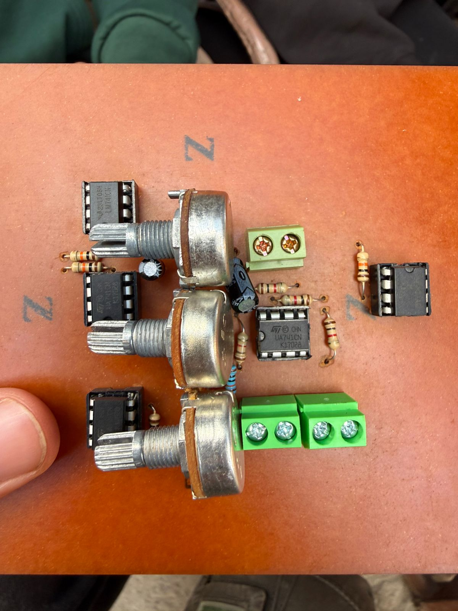

Analog PID Controller

Hardware
PCB
Control
About
- Analog PID controller from scratch to regulatae LED brightness
- Built as one of my college projects for 3rd year Computer Engineering
- Designed and fabricated a reusable PID controller PCB with flexible input, output, and plant connection interfaces
- Prject strengthened my hardware skills from: soldering and PCB design to proteus simulation and electronics circuit design
System
- PID Controller: using x6 741 op-amps to construct Proportional, Integrator, Differentiator, Summator and Difference circuits
- Input Potentiometer: to set reference voltages allowing more control for user
- LDR acting as feedback circuit, measuring led intensity and outputing measurement back to PID controller input
- LED acting as plant to control its intensity according to desired reference input
challenges
- Understand PID behavior and how to tune it
- Design analog circuit using op-amps and choose the correct component values for best stability
- Deal with noise, non-idealities and real-world constraints
Simulation & Tuning Work
- We modeled the system mathematically on Matlab with parameter sweeps for: proportional gain (Kp), Integral gain (Kv), Derivative gain (Kd)
- Studied: rise time, settling time, overshoot, damping, stability margins
Behind The Scenes
Proteus schematic

Block Diagram

Matlab




Proteus PCB Design

PID Controller PCB

© 2025 Youkii — Built with ☕ and Passion